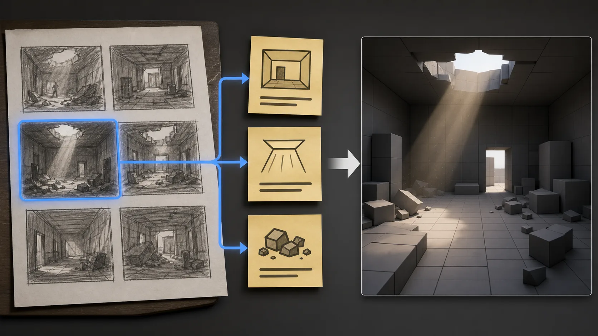
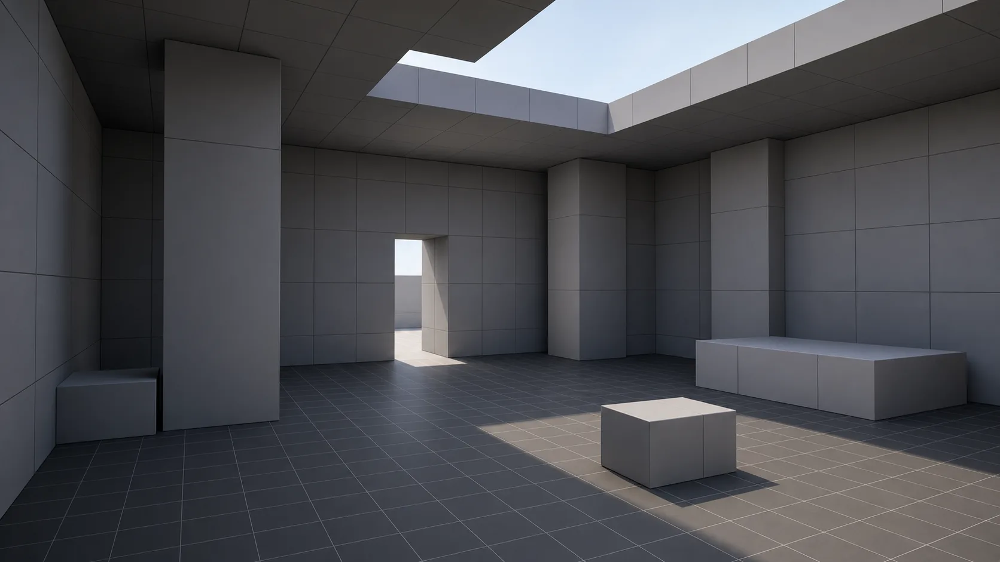
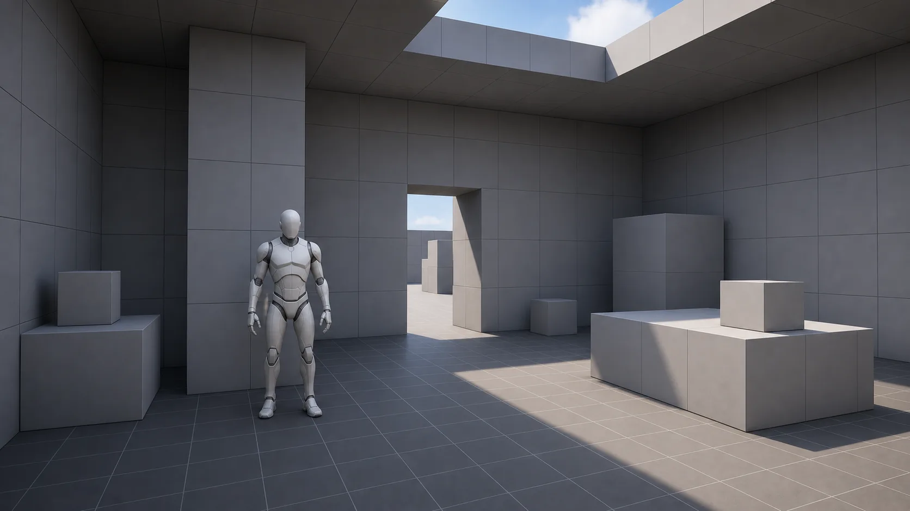
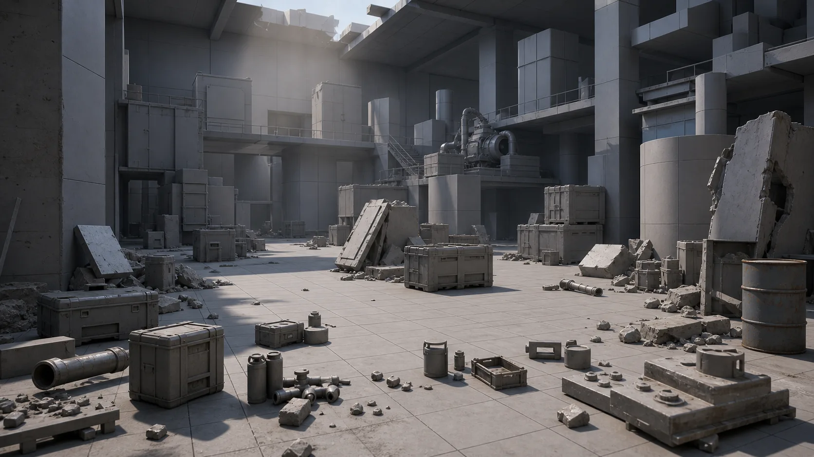
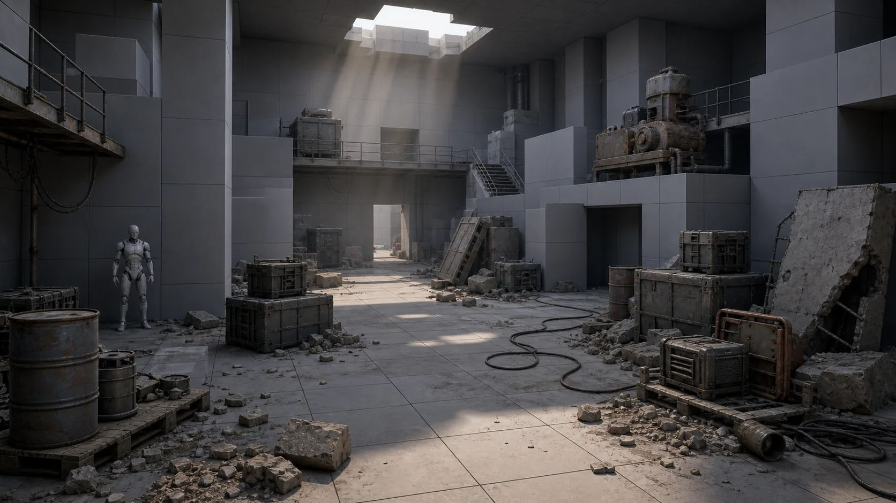

관련 문서
| 관계 | 문서 |
|---|---|
| 강의 계획서 | 강의계획서: Game Engine II |
| 강의 아웃라인 | 12주차 아웃라인: 3D 애셋 제작 및 AI 활용 |
| 1교시 핸드아웃 | 12주차 1교시: 생성형 AI 에셋 워크플로우 |
| 2교시 핸드아웃 | 12주차 2교시: 외부 3D 에셋 임포트·최적화 |
본인 기말 시네마틱 컨셉을 정하고, 그 환경을 더미 박스로 블록아웃한 뒤 강사 에셋 팩(또는 본인 AI 생성 에셋)을 임포트·보정·배치해 기말 프로젝트의 환경 베이스를 만들 수 있다
3교시는 1교시(AI 3D 파이프라인)와 2교시(임포트·최적화·통합)에서 배운 것을 본인 기말 시네마틱의 환경에 적용하는 실습입니다.
12주차는 정식 제출 과제가 없는 주차입니다. 3교시 산출물은 채점·제출 대상이 아니며, 14~16주차 기말 프로젝트의 환경 베이스 준비물입니다. 오늘 만든 환경은 본인 기말 작업의 출발점으로 본인이 가져갑니다.
시작 — 컨셉 결정 + 환경 셋업
실무 흐름 — 블록아웃에서 디테일로
1교시에 본 두 번째 영상(1,200만 원 시네마틱)의 환경 제작 순서가 오늘 3교시 순서와 같습니다.
| 실무 흐름 | 오늘 3교시 |
|---|---|
| 컨셉 이미지·레퍼런스 확보 | 컨셉 결정 (스토리보드에서) |
| 블록아웃 — 더미 박스로 공간 잡기 | 단계 1 |
| 에셋 정리·배치로 디테일 올리기 | 단계 2·3 |
핵심은 처음부터 멋진 에셋을 깔지 않는다는 것입니다. 더미 박스로 공간을 먼저 잡고, 그다음 실제 모델로 교체하면서 디테일을 올립니다. 공간 구조와 카메라 동선을 먼저 정해야 어디에 무엇을 둘지가 보이기 때문입니다. 빈 공간에 갑자기 에셋을 많이 배치하면 무엇을 어디에 둘지 판단하기 어려워집니다. 블록아웃 먼저, 에셋은 그다음 — 이 순서가 3교시의 뼈대입니다.
3교시 미션
본인 기말 시네마틱 컨셉을 정하고, 그 환경을 ① 더미 박스로 블록아웃한 뒤 ② 강사 에셋 팩(또는 본인 AI 생성 에셋)에서 1개 이상을 임포트·보정하고 ③ 원근 룰로 배치해 환경 베이스를 만든다.
- 정식 제출 과제가 아닙니다. 채점하지 않습니다. 오늘 만든 환경이 14~16주차 기말 프로젝트의 무대가 되므로, 미리 잡아두면 기말 작업이 수월해집니다. LMS 제출도 점수도 없으며, 결과물은 본인 기말 작업의 출발점입니다.
- 오늘 배운 것을 다 쓸 필요는 없습니다. 기본 완성은 블록아웃 + 에셋 1개 이상 임포트·보정 + 원근 배치 + 스크린샷 1장입니다. Nanite·Collision 점검이나 Packed Level로 묶는 것은 시간이 남는 경우의 선택 확장입니다.
컨셉 결정
가장 먼저 만들 환경을 정합니다. 2교시 끝에서 받은 힌트대로, 8주차 중간고사 때 만든 스토리보드를 꺼냅니다.

- 8주차 스토리보드를 펼쳐, 배경이 잘 드러난 컷 하나를 고른다
- 그 컷을 보며 공간 키워드 3개를 메모한다 — 예: "버려진 실내 / 위에서 빛이 들어옴 / 바닥에 잔해"
- 이 세 키워드가 블록아웃의 설계도가 된다
스토리보드가 없거나 컨셉을 바꾸고 싶으면, 강사가 준비한 샘플 컨셉 이미지를 쓰거나 1교시에서 본 AI 이미지 생성으로 컨셉을 하나 생성해도 됩니다. 기말 컨셉은 자유입니다 — 10·11주차 격투 시네마틱을 액션 장면으로 이어가도 되고, 새 컨셉이어도 됩니다. 중요한 것은 지금 '어떤 공간을 만들지'가 한 줄이라도 정해지는 것입니다.
환경 셋업
작업할 빈 레벨을 엽니다.
- Content Browser에서
Maps/Basic빈 레벨을 열거나, 새 빈 레벨 생성 - 마네킹을 하나 꺼내 viewport 중앙 근처에 배치 — 사람 크기(약 1.7m) 기준자. Content Browser의 Characters 폴더에서 SKM_Manny를 viewport로 드래그
- 마네킹은 작업 내내 두고, 공간·에셋 스케일을 가늠하는 자로 사용
마네킹은 10주차에 쓴 본인 캐릭터(SKM_Manny)입니다. 빈 프로젝트라 마네킹이 없으면 Cube를 약 170cm 높이로 세워 임시 기준자로 써도 됩니다. 핵심은 '사람 크기' 기준 하나가 씬에 있는 것입니다.
단계 1 — 블록아웃
단계 1은 블록아웃입니다(6주차 레벨 디자인에서 한 번 다룸). 더미 박스로 공간의 큰 형태 — 벽, 바닥, 천장, 주요 구조물 — 를 잡습니다. 디테일은 신경 쓰지 말고 덩어리와 비율만 잡습니다.
도구는 Cube 액터입니다. Place Actors 패널의 Shapes 안에 Cube가 있습니다. viewport로 끌어다 놓고 Scale로 늘이면 — 납작하게 늘이면 바닥, 길고 높게 늘이면 벽, 위에 깔면 천장이 됩니다.
블록아웃 기본 흐름
- Place Actors > Shapes > Cube를 viewport로 드래그
- 액터 선택 → Details > Transform > Scale로 형태 조정 (바닥은 넓고 납작하게, 벽은 높고 얇게)
- Location으로 위치 배치 — 본인 컨셉 키워드에 맞게 벽·바닥·천장·주요 구조물
- 복제는 Ctrl+W (Duplicate)로 빠르게
더 정교하게 잡고 싶으면 Modeling Mode의 박스 도구를 써도 됩니다. 다만 블록아웃은 큰 덩어리를 빠르게 잡는 것이 핵심이라 Cube 액터만으로 충분합니다. 컨셉 키워드를 계속 보면서 잡습니다 — '위에서 빛이 들어옴'이 키워드면 천장에 구멍을 하나 비워두는 식입니다.
이 단계에서 할 일
- Cube 액터로 바닥 하나 — 공간 크기만큼 넓게
- 벽 — 컨셉에 맞게 2~4면. 실내면 둘러싸고, 야외면 한두 면만
- 천장 또는 하늘 트인 공간 — 컨셉에 맞게
- 주요 구조물 1~2개 — 기둥, 단(段), 큰 가구 자리 등 (아직 더미 박스로)
- 마네킹을 곳곳에 세워 벽 높이·문 크기·공간 폭이 사람 기준으로 적당한지 확인

기대 결과: 더미 박스만으로도 '여기가 어떤 공간이구나'가 읽히는 상태.

완벽하게 하려 하지 마세요. 블록아웃은 짧은 시간 안에 큰 덩어리를 잡는 단계입니다. 비율이 어색하면 Scale을 빠르게 조정하고 넘어갑니다. 디테일과 실제 에셋은 단계 2·3에서 올립니다.
Cine Camera로 구도 확인
- Place Actors에서 Cine Camera Actor 1대를 꺼내 배치
- Pilot 모드로 카메라 시점에서 본인 공간을 본다 — 시네마틱은 카메라가 보는 게 전부 (2교시 배치 룰)
- 카메라에 잘 잡히는 방향을 확인해두면 단계 3 배치 때 어디에 힘을 줄지 정해진다
카메라 1대는 지금 정밀하게 잡지 않아도 됩니다. '대략 이쪽에서 볼 것이다' 정도면 됩니다.
흔한 문제 — 블록아웃
| 증상 | 원인 | 해결 |
|---|---|---|
| 공간이 너무 크거나 작아 보임 | 마네킹 기준 확인 안 함 | 마네킹을 옆에 세워 벽 높이·폭을 사람 기준으로 재조정 |
| 블록아웃에 시간을 너무 씀 | 디테일까지 잡으려 함 | 블록아웃은 덩어리·비율만. 길게 끌지 않기 |
| Cube가 안 보임 | Place Actors의 Shapes 카테고리 접힘 | 검색창에 cube 입력 |
| 벽·바닥이 서로 떠 있거나 겹침 | Location 정렬 안 됨 | 그리드 스냅을 켜고 면을 맞붙임 |
단계 2 — 에셋 임포트 + 기본 보정
단계 2는 블록아웃한 공간에 들어갈 실제 3D 에셋을 언리얼로 들여오는 단계입니다. 2교시에서 배운 임포트·스케일 보정·머티리얼 재연결을 본인 컨셉 에셋으로 직접 진행합니다.
먼저 에셋을 확보합니다. 두 가지 경로가 있습니다.
| 경로 | 방법 |
|---|---|
| 기본 — 강사 에셋 팩 | LMS에 올라간 에셋 팩(컨셉 2~3종의 배경·소품 FBX)에서 본인 컨셉에 가까운 것을 다운로드 |
| 선택 — 본인 AI 생성 에셋 | 1교시에서 본 흐름대로 Tripo / Meshy 무료 티어로 직접 생성한 FBX |
강사 팩이 기본 경로이고, 직접 생성은 본인 컨셉에 딱 맞는 것이 팩에 없을 때 쓰면 됩니다. 어느 쪽이든 결과물은 FBX 파일이고, 임포트 절차는 동일합니다.
임포트 흐름 (2교시 복습)
- FBX 파일을 언리얼 Content Browser로 드래그앤드롭
- 임포트 옵션에서 Static Mesh로, Import Materials·Textures 켜고 Import
- Content Browser에 Static Mesh 에셋 생성됨
UE 5.7 임포트 다이얼로그는 프로젝트 설정·파일 형식에 따라 화면이 다를 수 있습니다. 필드 이름보다 기능으로 옵션을 찾으세요.
이 단계에서 할 일
2교시에서 본 세 가지 — 임포트, 스케일 보정, 머티리얼 재연결 — 순서대로 진행합니다.
- 본인 컨셉에 쓸 에셋 1개 이상을 Content Browser로 임포트
- viewport에 꺼내 놓고, 마네킹 옆에 세워 스케일 확인
- 크기가 안 맞으면 보정 — Import Uniform Scale(또는 Scale Factor 계열) 재임포트, 또는 액터 Scale 조정
- 회색 덩어리면 머티리얼 에디터에서 Base Color 텍스처 재연결 (2교시 Step 3)
기대 결과: 에셋이 마네킹 기준으로 알맞은 크기이고, 회색 덩어리가 아니라 색이 입혀진 상태.
욕심내지 마세요. 에셋 1개만 제대로 임포트·보정해도 기본 완성입니다. 시간이 되면 2~3개 더, 안 되면 1개로 충분합니다. 핵심은 '임포트 → 스케일 맞추기 → 텍스처 붙이기' 흐름을 본인 손으로 한 번 끝까지 해보는 것입니다.
AI 생성 에셋을 쓰면 메시가 다소 거칠 수 있습니다. 배경·소품이라 괜찮습니다. UV가 어긋나 텍스처가 늘어나 보여도 멀리 둘 것이면 감수하고, 거슬리면 더 단순한 에셋으로 교체합니다.
흔한 문제 — 임포트 + 보정
| 증상 | 원인 | 해결 |
|---|---|---|
| 에셋이 지나치게 크거나 작음 | 단위 불일치 | 마네킹 비교 → Import Uniform Scale 또는 액터 Scale 보정 |
| 회색 덩어리 | 텍스처 미연결 | 머티리얼 에디터에서 Base Color 텍스처 재연결 |
| 임포트 다이얼로그가 2교시 화면과 다름 | UE 버전·프로젝트 설정에 따라 화면이 다를 수 있음 | 필드 이름이 아닌 기능(Static Mesh/Materials)으로 찾기 |
| 텍스처가 늘어나 보임 | AI 메시의 UV가 어긋남 | 배경용이면 감수, 거슬리면 단순한 에셋으로 교체 |
단계 3 — 배치 + 선택 확장
단계 3은 임포트한 에셋을 블록아웃 공간에 배치하는 단계입니다. 더미 박스를 실제 에셋으로 바꿔가면서 2교시에서 배운 배치 룰을 적용합니다.

| 룰 | 내용 |
|---|---|
| 원근 룰 | 뒤쪽에 큰 것, 카메라 앞쪽으로 갈수록 작은 것 → 깊이감 |
| 카메라 기준 | 카메라가 비추는 곳에 힘을 주고, 안 잡히는 곳은 비워도 됨 |
| 불규칙성 | 자로 잰 듯 정렬하지 말고 살짝 어긋나게 |
| 스케일 기준자 | 마네킹을 계속 옆에 두고 사람 크기로 확인 |
단계 1에서 세운 더미 박스 자리에 실제 에셋을 놓거나, 더미를 실제 에셋으로 교체합니다. 다 채울 필요는 없습니다 — 카메라가 보는 곳 위주로 배치합니다.
이 단계에서 할 일
- 단계 1의 더미 박스를, 단계 2에서 임포트한 실제 에셋으로 교체하거나 그 위에 배치
- 원근 룰 적용 — 뒤에 큰 구조물, 앞쪽에 작은 소품
- 같은 에셋을 여러 번 쓸 때는 Ctrl+W 복제 + 위치·회전을 조금씩 어긋나게
- Cine Camera의 Pilot 모드로 수시로 확인 — 카메라에 잡히는 그림이 의도대로인지

기대 결과: 블록아웃 더미 위에 실제 에셋이 얹혀, 카메라로 봤을 때 '하나의 공간'으로 읽히는 상태.
배치는 한 번에 완벽할 수 없습니다. 놓고 → 카메라로 보고 → 어색하면 옮기고 — 이 반복이 정상입니다. 처음부터 잘하려 하지 말고 보면서 고쳐갑니다. 에셋이 적어도 괜찮습니다. 소품 한두 개 + 블록아웃 더미만으로도 카메라 구도가 좋으면 충분히 '공간'이 됩니다.
선택 확장 과제
기본 완성(블록아웃 + 에셋 임포트·보정 + 배치)을 마쳤고 시간이 남으면 아래를 해봅니다. 시간이 빠듯하면 하지 않아도 됩니다 — 자기점검의 확장 기준이며 채점하지 않습니다.
선택 확장 과제 1 — 최적화 점검
- 임포트한 에셋의 Static Mesh 에디터에서 Nanite 활성화 (AI·외부 메시는 폴리곤이 많아 Nanite와 궁합이 좋음)
- Collision은 장식 소품에서는 생성하지 않거나 비활성화하고, 캐릭터가 바닥을 밟는 컷이 있으면 그 바닥만 단순 콜리전으로 처리
선택 확장 과제 2 — Packed Level Actor
- 같은 소품 세트(예: 잔해 더미)를 여러 번 반복 배치했다면, 그 묶음을 다중 선택 → 우클릭 > Level > Create Packed Level Actor로 묶는다
- 묶은 뒤 개별 수정은 편집 모드 진입 (2교시 심화 3)
- 반복 요소가 없으면 이 과제는 건너뛴다 — Packed Level은 같은 묶음이 여러 번 나올 때만 쓰는 도구
이 둘은 선택입니다. 기본 완성을 먼저 끝내고 시간이 남을 때만 하면 되며, 하지 않아도 오늘 목표는 달성한 것입니다.
자기점검 + 캡처
자기점검 체크리스트
본인 환경을 점검하고 다듬습니다. 채점용이 아니라 본인 확인용입니다 — 기말 작업에 들어가기 전 '내 환경 베이스가 어디까지 됐나'를 스스로 보는 것입니다.
기본 완성 기준
- 미완료: 기말 컨셉 환경의 공간 구조(벽·바닥·천장·주요 구조물)가 블록아웃으로 잡혀 있다
- 미완료: 외부 또는 AI 생성 에셋을 1개 이상 임포트하고 스케일·머티리얼을 보정했다
- 미완료: 에셋 배치에 원근 룰(뒤=큰 것 / 카메라 앞=작은 것)을 적용했다
- 미완료: 마네킹(약 1.7m) 기준으로 공간·에셋 스케일을 검증했다
- 미완료: 환경이 잘 드러나는 뷰포트 스크린샷 1장을 저장했다
확장 기준
- 미완료: Nanite 또는 Collision 등 최적화 항목을 점검했다
- 미완료: 반복되는 요소를 Packed Level Actor로 묶어봤다
기본 5개가 모두 체크되면 오늘 목표는 충분히 달성한 것입니다. 확장 2개는 보너스 학습입니다. 막힌 항목이 있으면 그 단계의 흔한 문제 표를 다시 봅니다.
환경 스크린샷 저장
오늘 만든 환경을 스크린샷 1장으로 남깁니다. 제출하는 것이 아니라 본인 기말 작업 때 참고용입니다.
- Cine Camera의 Pilot 모드 또는 viewport를 환경이 잘 보이는 각도로 맞춤
- 스크린샷 저장:
- 간단하게는 viewport 스크린샷 (Windows
PrtScn/ macOSCmd+Shift+4) - 더 좋은 화질은 viewport 메뉴의 High Resolution Screenshot
- 본인 프로젝트 폴더나 작업 메모에 저장 — 기말 작업 시 출발점 참고용
예시 결과: 블록아웃 공간 위에 에셋을 배치해 기말 환경 베이스로 이어갈 수 있는 상태.

오늘 만든 레벨을 반드시 저장(Ctrl+S) 하세요. 이것이 기말 환경 베이스이므로, 14주차에 그대로 이어서 작업합니다.
마무리
블록아웃으로 공간을 먼저 잡고, AI·외부 에셋으로 채운다. 오늘 만든 환경이 기말 시네마틱의 무대다.
오늘 흐름 — 컨셉 결정(스토리보드) → 블록아웃(더미 박스) → 에셋 임포트·보정 → 원근 룰 배치. 1,200만 원 영상의 환경 제작 순서를 본인 컨셉으로 한 번 밟아본 것입니다.
12주차 전체를 보면 — 1교시에 생성형 AI 3D 파이프라인과 도구 지형(AI 3D는 배경·소품에 쓴다), 2교시에 외부 에셋을 언리얼에 임포트하고 최적화하고 통합하는 법, 3교시에 본인 기말 컨셉 환경을 블록아웃했습니다. 후반부 흐름은 10주차 캐릭터, 11주차 카메라, 12주차 환경 — 본인 기말 시네마틱의 캐릭터·카메라·환경이 모두 갖춰지고 있습니다.
다음 시간 예고
13주차는 렌더링과 컬러 그레이딩입니다. 포스트 프로세스 볼륨, 컬러 그레이딩, Movie Render Queue(MRQ)로 — 오늘 만든 환경을 최종 렌더링 품질로 끌어올리는 단계입니다. 14~16주차 기말 프로젝트에서 캐릭터·카메라·환경·렌더링을 모두 통합한 시네마틱 영상을 완성해 제출합니다. 오늘 만든 레벨을 본인 프로젝트 폴더에 잘 저장해두면 13주차와 기말에 그대로 이어집니다.